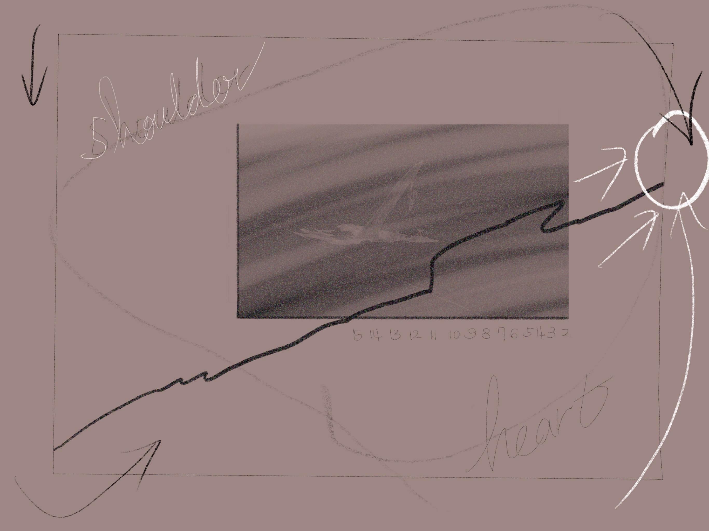
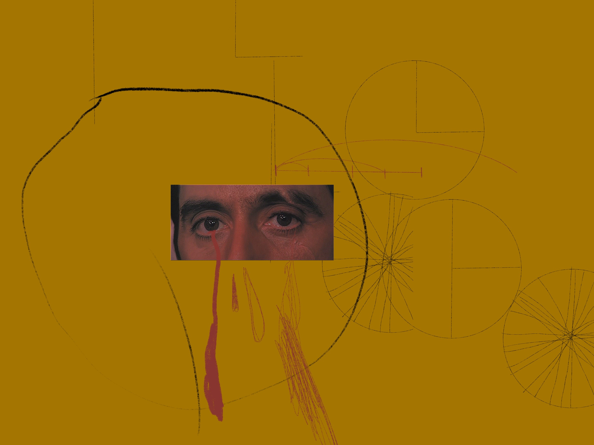
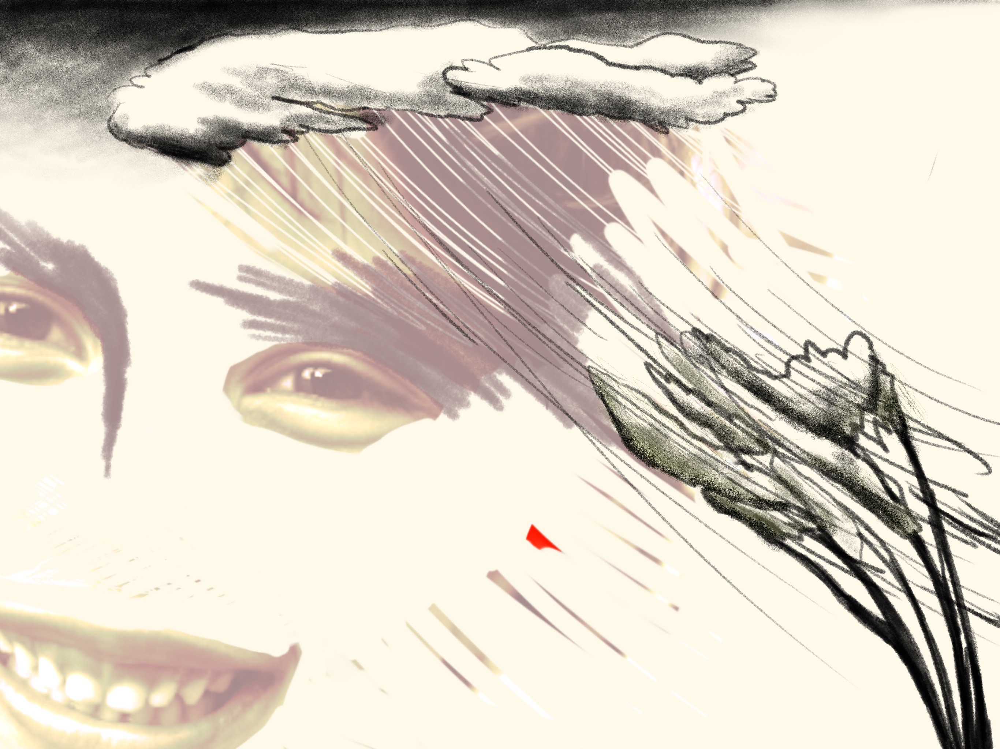
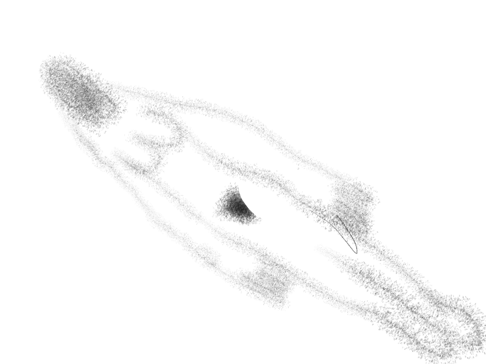

남자 이야기

그런 인간

17분 거리

헌정

스파이럴 시퀀스
스파이럴시퀀스. 스파이럴 마인드. 시작점과 끝점이 영원히 만나지 않는 구역.
평행 세계. 그 사람의 오른쪽 면에는 이어서 달팽이 모양이 되는 점 여섯개가 있다.
매일 밤 그 점을 이으며 한 점이라도 없다면 무슨 모양이 되었을까 상상한다. 점점 작아지는 곡선.
돌아가는 면적. 목선이 아름다운 사람은 목소리도 아름다울까. 형태 없는 것이 가장 기억에 오래 남는다는 사실은 머리를 어지럽게 한다.
핑그르르 변신! 핑그르르 진화! 레벨 업. 다음 단계로 넘어가는 구역. 달팽이 계단. 누구나 한 번쯤 걸어내려가봤을 달팽이 계단.
가장 작은 면적으로 올라갈 수 있는 나선형 계단. 흰 빙판을 넓게 가로지르는 선수. 차가운 바닥을 긁는 스케이트 날. 칭-.
스프라이트 기포 터지는 소리. 귓바퀴. 멀어지는 소리. 끝나지 않는 이야기.